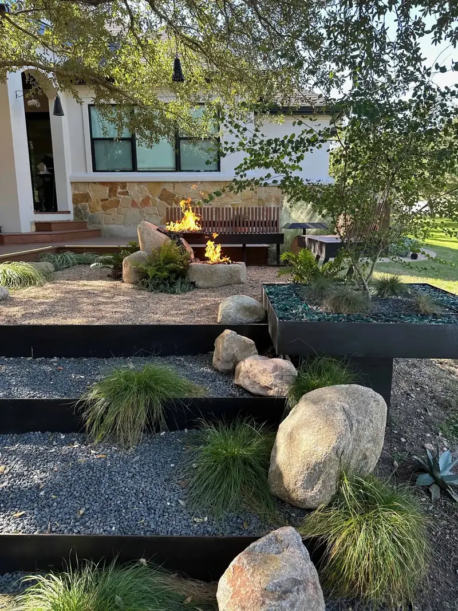
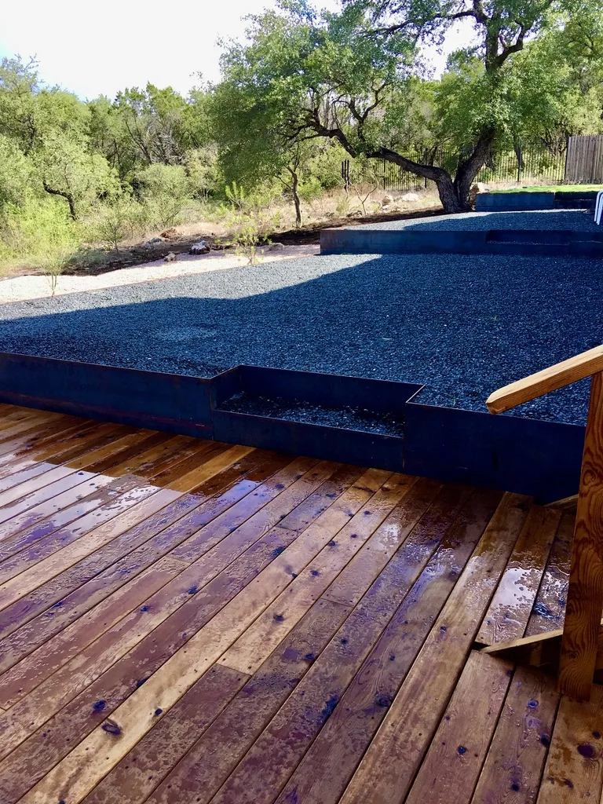
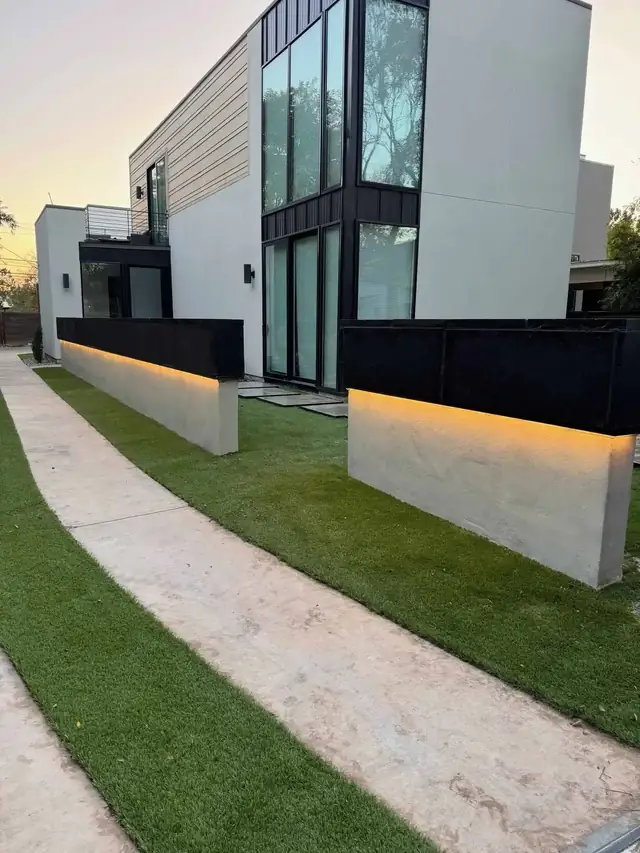
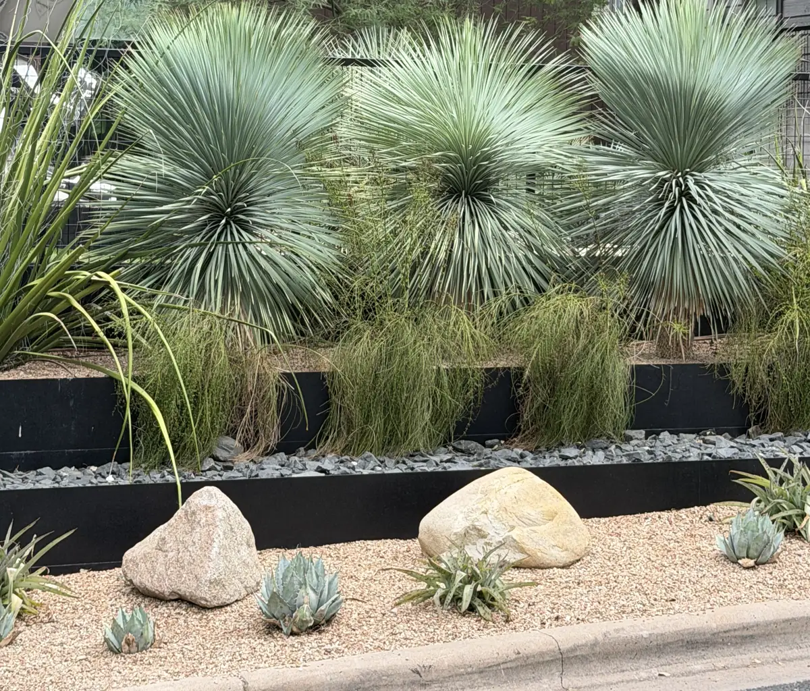

Red Agave Landscape designs and builds retaining walls in Austin, TX in five materials: quarter-inch structural steel, Texas limestone, CMU block with a stone or stucco face, poured concrete, and boulders. Every wall stands on a footing sized for the soil under it, and every wall has a drain behind it. We have built in Austin since 2009, we weld our steel on site, and every wall is built by our own crew. Each project starts with a free consultation, and the CAD plan is included. Call or text 512-695-7566.
Materials
Which Retaining Wall Materials Do We Build?
Five, and we often combine them on one project. The slope picks the material as much as the look does. A low garden wall and a wall under a driveway are different jobs, and they call for different walls.
Material
Typical Height
Best For
Structural steel, 1/4 inch
Any height, engineered
Modern houses, steep slopes, tight lots
Limestone chop block, dry stacked
3 to 4 ft
Low garden walls, a traditional look
Limestone chop block, set in mortar
4 to 6 ft, on a footing
Mid-height walls, a Hill Country look
CMU block with stone or stucco
6 to 8 ft, engineered
Tall walls that match the house
Poured concrete
Tall walls, engineered
Modern lines, walls under a driveway
Boulders
Under 4 ft
Low banks, natural planting
Structural Steel
Quarter-inch steel plate, welded on site to I-beam posts that stand in a reinforced concrete footing. Steel is the thinnest wall we build, so it gives the most level ground back on a tight lot. Uncoated steel develops a natural rust patina over 6 to 12 months, or it can be finished in a color. Our welded steel work carries a 10-year structural warranty. See our steel retaining walls page for the full build.
Texas Limestone
Limestone is quarried in Central Texas, and it suits a Hill Country house. Chopped block stacks into a tight, even face. Rough-cut slabs look rustic, and ledge stone lies in thin layers. Dry stacked, limestone makes a low garden wall. Set in mortar on a footing, it goes taller.
A limestone block wall with a stone cap, holding the bank behind a paver patio and a black steel planter.
CMU Block With Stone or Stucco
A core of concrete block on a footing, faced with natural stone or finished in stucco. The block does the structural work, and the face matches the house. We face walls in limestone, chopped stone, ledgestone, and Austin stone. See our masonry and concrete page.
Poured Concrete
Concrete poured into forms around steel reinforcing. It turns corners cleanly and steps down in exact increments, so it suits a modern house. The face can be board-formed, sandblasted, acid-washed, or left raw. We pour and finish our own concrete. For a tall wall, or a wall that carries a driveway, concrete is often the right structure.
Boulders
Large native boulders, set by machine. A boulder wall holds by its own weight, and water drains between the stones. It suits a low bank with natural planting around it.
Seat Walls
A wall at sitting height, built around a fire pit or along a patio. We build seat walls on a block core with a stone or stucco face, so they match the retaining walls beside them.



Three of our walls: steel terraces at the Overlook at Lewis Mountain in Southwest Austin, steel-walled terraces in Bee Cave, and lit concrete walls at a front entry.
Reading the Site
How Do We Choose the Right Wall for Your Slope?
By reading four things before any talk of material. A retaining wall is the answer to these, so they come first.
The slope: how far the ground drops, and over what distance. That sets how many walls you need and how tall each one is.
The water: where rain runs now, and where it will go once the wall is built.
What stays: the house, the trees, the fences, and the utilities the wall has to meet or miss.
What sits above the wall: a driveway, a pool, or a structure adds load to the soil behind the wall. Engineers call that a surcharge, and the wall is designed for it.
Then we read the ground. Austin sits on the Balcones Escarpment. East of I-35 the soil is expansive clay, which swells when it is wet and shrinks when it is dry. West of MoPac it is thin soil over fractured limestone. A wall in Westlake Hills on thin soil over rock needs a different foundation than a wall in Pflugerville on deep clay.
We dig test holes to find the soil type, the depth to rock or caliche, and the slope. The footing is designed from what we find. Our retaining wall engineering guide covers the soil and the footings in detail.
Drainage
What Goes Behind Every Retaining Wall?
Drainage. Water that collects behind a wall pushes on it, and that pressure is the main reason retaining walls bow and fail in Central Texas clay. This is what we build behind a wall:
Drain pipe: a perforated pipe wrapped in filter fabric, set at the base of the wall. We use both rigid PVC and corrugated pipe.
Drainage gravel: clean gravel between the pipe and the wall, so water drops to the pipe. Behind a steel wall it is at least 12 inches deep.
An exit: the pipe comes out to daylight at the ends of the wall, or it ties into a storm drain.
Weep holes: on stone and concrete walls, openings along the bottom course, 4 to 6 feet apart, let trapped water out through the face.
Backfill: compacted fill placed in layers behind the wall. Native soil is kept for the top 6 to 8 inches, for planting.
Finish grade: the ground above the wall is shaped to send surface water away from the wall face.
Ask any contractor to show you this detail on paper, including where the water goes once it leaves the pipe. See our drainage page and our landscape drainage guide.
How We Build
How Is a Retaining Wall Built?
In six steps, by one crew. The team that draws the wall builds it.
01
Consultation and Plan
Free and on site. We walk the slope with you, measure it, and draw the walls on a CAD plan, which is included. You see where each wall runs and how tall it is before the build starts. See our landscape design page.
02
Site Study
We dig test holes to find the soil type, the depth to rock or caliche, and where the water goes. Footing depth, post spacing, and the drain are all set from this.
03
Footing
We trench below the active soil zone, typically 18 to 24 inches in Austin, set steel reinforcing, and pour a continuous concrete footing. Where limestone bedrock is within reach, anchor bolts are drilled and set into the rock.
04
The Wall
Steel plate is cut and welded to its posts on site, so we can adjust to the grade and to curves as we go. Limestone is laid by hand. Block is laid, filled, and faced. Concrete is formed and poured.
05
Drain and Backfill
The drain pipe, the fabric, and the drainage gravel go in behind the wall. Fill is placed in layers and compacted.
06
Finish
We grade the ground above the wall, then plant it and light it. Many of our walls carry steel planters, LED light along the steel, and native planting. See our landscape lighting and xeriscape pages.
Terracing
One Tall Wall or Several Low Ones?
Several low ones, when the yard has room. On a bare slope at the Overlook at Lewis Mountain in Southwest Austin we held the grade with three low steel walls where one tall wall could have gone. One tall wall would have given the yard a high level and a low level. Three low walls gave it three level terraces.
Less soil per wall: each wall holds back a shorter bank, so each one carries less pressure.
Slower water: each terrace catches rain and slows it before it reaches the wall below.
Room to plant: the level bands between the walls become beds.
Lewis Mountain: three low steel walls, by day and at dusk.
Permits
Do You Need a Permit for a Retaining Wall in Austin?
For a low wall, usually not. Austin Development Services lists a residential retaining wall as exempt from a building permit when it is not over 4 feet tall, measured from the bottom of the footing to the top of the wall, unless it supports a surcharge or sits in a flood hazard area. The same city page notes that exempt work still has to meet the building codes and city codes.
The height is measured from the bottom of the footing, so a wall that shows 3 feet above the ground can count as taller. Taller walls are engineered, with stamped drawings. When a wall needs a permit, we handle it. Our retaining wall permit guide covers the details.
Uses
Where Do Retaining Walls Solve Problems?
Sloped backyards: terraces turn a slope into level ground for a patio, a lawn, or beds. Hillside lots in Westlake Hills, Barton Creek, and Lakeway are where we build most of them.
Pools: walls make the level changes around a pool. Steel is thin, so it leaves more deck on a tight lot.
Driveways and parking: a wall beside a driveway carries the weight of vehicles above it, and it is engineered for that load.
Creek lots: lots along Bull Creek, Barton Creek, and Shoal Creek need walls that stand up to fast water.
Front yards: a low terrace lifts planting up to the street. In South Austin we built a black steel terrace on two levels and planted it with Yucca rostrata.
Raised beds: steel-walled beds 18 to 24 inches tall hold good soil above Austin’s caliche and clay. See our custom steel planters.

South Austin: a black steel terrace on two levels in a front yard.
Our Work
Where Have We Built Retaining Walls?
Across the Austin area, on clay and on rock. Four of them:
Overlook at Lewis Mountain, Southwest Austin: three low steel walls that terrace a bare slope, 260 linear feet of quarter-inch steel, built in 18 days. See the case study.
Bee Cave: steel-walled terraces of dark gravel that step down a slope beside a wood deck, under a live oak.
South Austin: a two-level black steel terrace in a front yard, planted with yuccas, agaves, and firecracker fern.
Red Agave Landscape designs and builds retaining walls in Austin in quarter-inch structural steel, Texas limestone, CMU block with a stone or stucco face, poured concrete, and boulders. Every wall is built by our own crew, and every project starts with a free consultation with the CAD plan included.
What is the best material for a retaining wall in Austin?
The one that fits the height, the soil, and the house. Structural steel suits modern houses and tight lots. Texas limestone suits a Hill Country house. Block with a stone or stucco face and poured concrete suit tall walls and walls that carry a driveway.
Do I need a permit for a retaining wall in Austin?
Austin Development Services lists a residential retaining wall as exempt from a building permit when it is not over 4 feet tall, measured from the bottom of the footing to the top of the wall, unless it supports a surcharge or sits in a flood hazard area. When a wall needs a permit, we handle it.
What goes behind a retaining wall for drainage?
A perforated drain pipe wrapped in filter fabric at the base of the wall, with clean drainage gravel between the pipe and the wall, and an exit for the water. We use both rigid PVC and corrugated pipe.
How tall can a retaining wall be?
Red Agave has built steel walls up to 8 feet in a single tier, and higher in stepped tiers. Taller walls are engineered, with stamped drawings.
Is it better to build one tall retaining wall or several low ones?
On our Lewis Mountain project in Southwest Austin, three low steel walls did more than one tall wall could. They gave the yard three level terraces. Each wall holds back less soil, and each terrace slows water before it reaches the wall below.
Why do retaining walls fail in Austin?
Water. Rain collects in the soil behind a wall and pushes on it, and Austin clay swells when it is wet. A wall with a drain pipe, drainage gravel, and an exit for the water does not carry that pressure.
How long does a retaining wall take to build?
Our project at the Overlook at Lewis Mountain in Southwest Austin, with three steel terraces and two deck levels, took our crew 18 days.
What does a retaining wall cost in Austin?
Every wall is priced after a free on-site consultation. Height, material, soil, and access drive the price. Our retaining wall cost guide explains each one.
Do you build seat walls?
Yes. We build seat walls around fire pits and along patios, on a block core with a stone or stucco face.
Plan Your Retaining Wall
Owner-designed · Built by our own crew · Free consultation and CAD plan